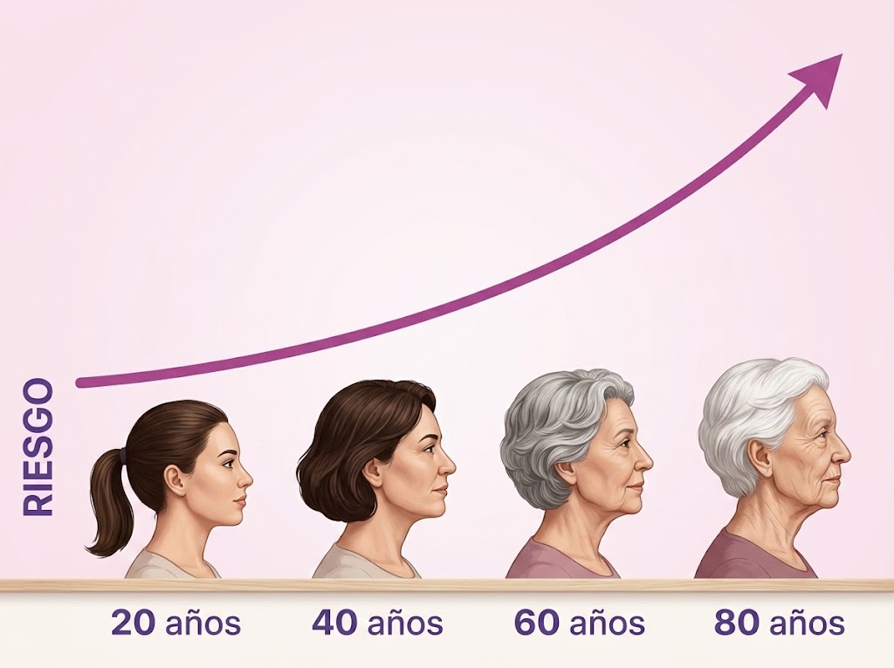

Factor 11. Edad y Genética
Edad: A medida que transcurren los años, el riesgo acumulado aumenta progresivamente, presentando mayor incidencia a partir de los 40 a 60 años debido a la exposición prolongada a agresores y al envejecimiento celular.
Genética: Puede existir cierta predisposición hereditaria en la susceptibilidad biológica, pero NO es determinante ni constituye la causa principal por sí sola. Los factores de comportamiento y ambientales tienen un peso significativamente mayor.
Predisposición ≠ Destino: Los hábitos saludables marcan la diferencia fundamental.